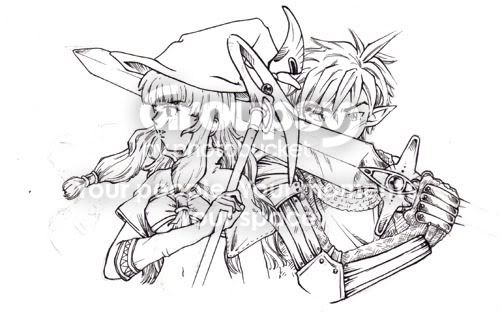
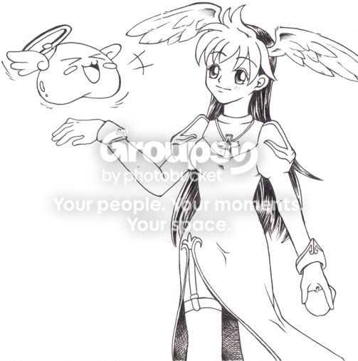
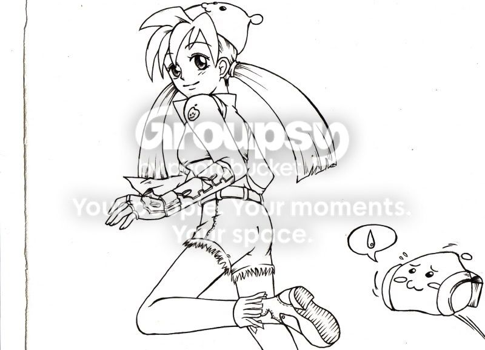
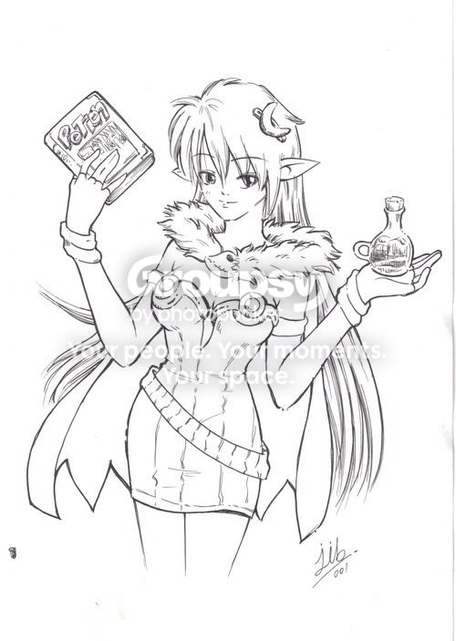
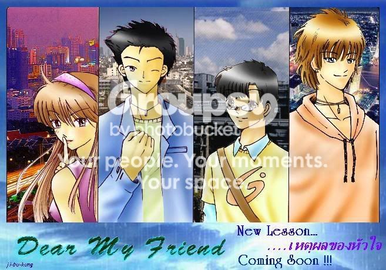
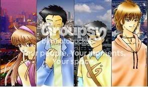
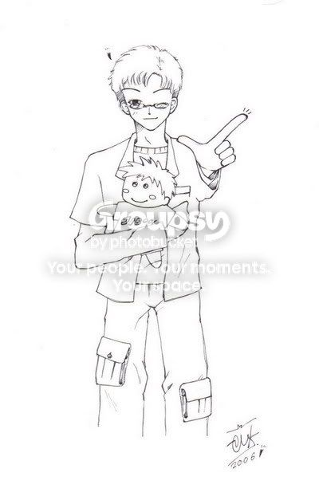

แต่อยากแปะ เพราะไม่รู้จะไปแปะที่ไหน - -*
ถ้าเห็นว่าไม่สมควรเช่นก็บอกได้นะครับ
รูปส่วนใหญ่จะเป็นจากเกมส์ RO ซะมาก เพราะเป็นเกมส์แรกที่เล่น
และยังอยู่ในวัยเยาว์ เลยมีเวลาวาด
แต่ตอนนี้ไม่ค่อยได้วาดเสียเท่าไหร่ T_T
แต่ก็จะพยายามครับ

อันนี้วาดไว้ประกอบฟิคแรค ที่วางโครงเรื่องไว้หมดแล้วทั้งสิ้น 3 ภาค
แต่สุดท้ายก็ดอง


อันนี้เป็น Set แรกๆ เลยที่วาด เป็นพรีสกับแองเจอริ่ง
คลิ๊กดูขนาดจริง

อันนี้ก็ Set เดียวกันกับข้างบน
คลิกดูขนาดจริง

อันนี้วาดให้เพื่อนอีกคนในบอร์ดเช่นกัน
คลิกดูขนาดจริง

อันนี้วาดให้อดีตเพื่อน

อันนี้วาดล้อเลียนเพื่อนคนนึงในบอร์ดแรคตอนนั้น 555+ โดนจับ Y
รูปนี้รีบลงสีไปหน่อย เพราะรีบใช้งาน
สีเลยเน่า


อันนี้วาดให้เจ๊จี้ สมาชิกบอร์ดเช่นกัน
คลิกดูขนาดจริง

อันนี้วาดประกอบ นิยาย Deay My Friend
(ลอกท่าทางมาจากนิตยสารวัยรุ่น - -)


นี่ก็เช่นกัน ช่วงนี้ยังใช้โฟโตชอปไม่เป็นเหมือนเคย - -* เน่าเละ

อันนี้แบบยังไม่ได้ลงสี

อันนี้วาดให้น้องคนนึงใน MSN เนื่องในวันเกิด
แบบลงสี ไม่รู้ไปอยู่ตรงไหนแล้ว - -* ยังหาไม่เจอ
ขอเวลาก่อน ยังมีอีก ติชมได้นะครับ